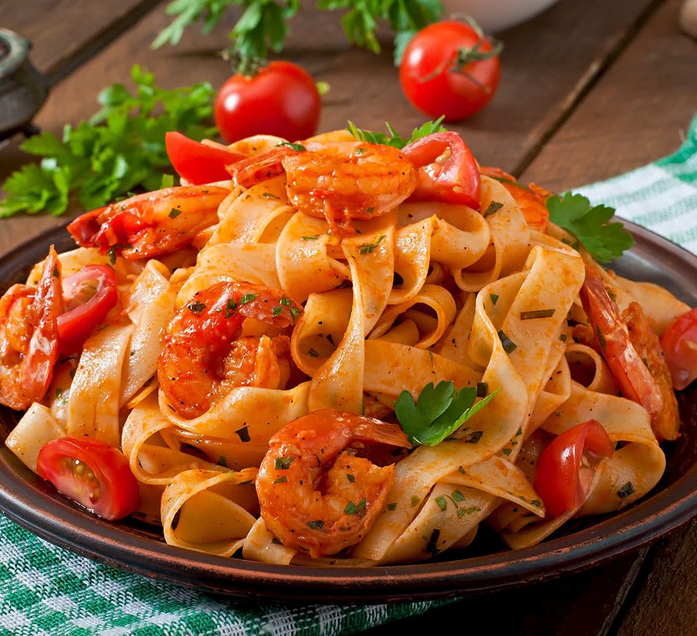

Ingredients
- 200g pasta
- 1 cup cherry tomatoes
- 1 bell pepper, sliced
- 1 zucchini, sliced
- 2 tablespoons olive oil
- Salt and pepper to taste
- Fresh basil for garnish
Instructions
- Cook pasta according to package instructions.
- In a pan, heat olive oil over medium heat.
- Add cherry tomatoes, bell pepper, and zucchini. Cook until tender.
- Combine cooked pasta with vegetables, season with salt and pepper.
- Garnish with fresh basil before serving.
Back to Recipes